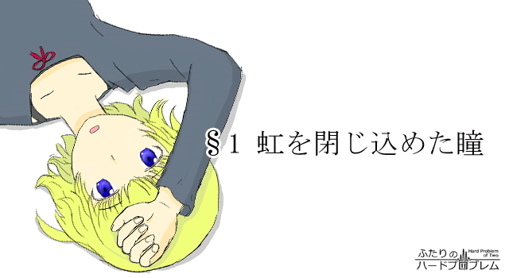

窓から差し込んだ朝日が散らかり放題の部屋を照らす。
「ん……」
ベッドの上で惰眠を貪っていた希海は、太陽の光を正面から受け顔を歪めた。今何時だろう。枕元の時計を手探りで探し当て、目を細めながらデジタル表示の文字盤に目をやる。弱々しい光を放つ簡素な緑色の液晶。セグメントは6時32分を指していた。
まだ6時か。半分寝ぼけた頭で希海は思う。最近はすっかり日の出が早くなった。アパートの一番東にあるこの部屋では、否が応でも、陽の光に季節の移ろいを思い知らされる。それでも今の季節はまだいい方で、夏などは眩しさと暑さで寝られたものではない。早起きが必要な者ならまだしも、今の希海にとってこの朝日は完全にありがた迷惑な存在でしかなかった。
あぁー。
布団をかぶったまま、知性の欠片もない間延びした声を上げる。そういえば昨日は夜の8時に寝た。いつもの様にネットサーフィンをしていたら面白いサイトを見つけてしまって、隅から隅まで読んでいるうちに昼夜が再逆転してしまったのだ。せっかくだからこのまま起きてしまおうか。たまには健康的な生活も、
「悪くないかなっ！」
両足で布団を勢い良く跳ねのけ、その反動を使って飛び起きる。立ちくらみで目の前が暗転するのをこらえて、カーテンを開けた。ガラス越しの強烈な太陽光線に希海は思わず目を細める。
そういえば、朝日には体内時計をリセットする波長成分が含まれているらしい。昔、テレビか何かで聞いたことを思い出しながら、希海は太陽光が自らの身体をリセットする様子をイメージする。
遠く離れた宇宙の核融合炉と、そこから発せられたおびただしい数の光子。その一部が1億5000万kmという途方もない距離を旅し地球にやってきた。大部分は大気に散乱されるも、いくらかの光子は希海の目にまで到達する。瞳孔をくぐり抜けた光は水晶体に分極を発生させながらその進路を曲げ、網膜に像を結ぶ。像を結んだ光子は光感受性蛋白質の電子を励起状態へと蹴り上げ、パルス状の電気信号が爆竹のように視神経を伝わっていく。そして、信号を受け取った脳ではニューロンやらシナプスやらの結合強度が変わったり化学物質だかホルモンだかを分泌したり何やらして、めでたく自分は12時に寝て8時に起きる規則正しい生活を送る真人間になる……という寸法だ。
んっ……、と一度大きく伸びをして希海は窓に背を向ける。せっかく早起きしたのだ。今日は久しぶりに外へ出掛けてみよう。そろそろ夏服が必要になってくる季節だ。それと食料が少なくなってきているから、これも買っておきたい。ついでにタバコも。そういえば欲しかったゲームの予約も始まっていたはずだ。どうせ出掛けるならネットではなくて実店舗で購入しよう。そうすれば特典も付く。希海はそんな取り留めもないことを考えながら、おぼつかない足取りで洗面所へと向かい、顔を洗い始める。
（ま、でもそんなに一度にやらなくていっか）
せっかく早起きができて、生活リズムがもとに戻ったのだ。あれもこれもと一度に色んなことをやってヘトヘトになったらいけない。最近は少し疲れると平気で10時間以上寝てしまう。そうなったら昨日までの昼夜逆転生活に逆戻りだ。ここは、仕事を1日ひとつに限定して、生活リズムの維持に努めた方が懸命かもしれない。
「じゃあ今日はとりあえず、食料品かな」
乾燥機の中から適当にタオルを取り出す。そこにはかすれた『劳动党立真摇高校』の文字。高校の入学式でもらったものだ。タオルで濡れた顔を拭き、化粧水を肌になじませると、一層気分が引き締まる気がした。
「ちょっと頑張ってみよっかな」
鏡に写る自分の姿に向かってつぶやく。もはや見慣れた自分の顔。生まれつきのくせっ毛には派手な寝癖が付いていた。
そうとも、今日が新しい自分の始まりになるかもしれないのだ。規則正しい生活が大切、健全な精神は健全な生活習慣から。多くの人がそう言っているではないか。今日みたいに毎朝早く起き、朝日を浴びて朝食をきちんと摂り、日中は積極的に体を動かし、夜は早めに寝る。そんな生活を続けていれば、いつかは自分もちゃんと学校に行けるようになるのかもしれない。
――学校。
ふと脳裏に浮かんだ単語。心臓が微かにどくんと、嫌な音を立てた。
（もう1年も経つのか……）
目を閉じ、ゆっくりと呼吸を整える。
希海が大学に行かなくなったのは、ちょうど去年の今頃だった。